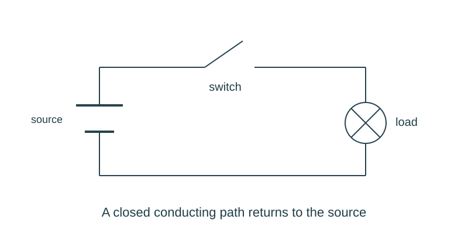

Job 28 · Diagnose a circuit fault
A fault-finding record showing prediction, test, result, and repair.
110 minutes • Tape measure + pocket notebook • Name: __________________ Date: __________
Materials: Approved low-voltage kit with teacher-planted open connection or switch fault; meter only if taught; paper fault cards as fallback.
Equipment alternative: Use two paper diagrams, one with an open switch and one broken lead. Specify and explain the distinguishing inspection; do not claim a measured repair.

Brief · 12 min
- The lamp is dark. Why is replacing every part at once a weak diagnostic method?
- Set up a dated notebook spread: sketch and readings on the left; calculation, decision, test, and revision on the right. Mark small sketches NTS unless drawn to a chosen scale.
- Work in pairs and rotate roles. Each student keeps an individual notebook and performs a tool action and a calculation.
Measure · 18 min
- Compare the circuit to its approved diagram with power disconnected.
- List two plausible causes: an open connection or an open switch/contact.
- Choose a test that separates the causes without shorting the source.
Plan · 20 min
- Write a hypothesis and expected observation for one test.
- Plan inspection/continuity tracing first; use a meter only in a mode demonstrated by the teacher.
- Prepare a four-column log: hypothesis, test, observation, next action.
Worked example
A supplied resistor test has 6 V across a 30-Ω load. After replacement with 60 Ω at the same voltage, predict current. I=V/R. 0.20 A becomes 0.10 A. A current change is not by itself proof that the original fault was resistance.
Make · 28 min
- Make one change or test at a time with appropriate source disconnection.
- Repair the identified open path and demonstrate operation.
- Restore the original drawing with the verified connection labeled; explain evidence against one alternative cause.
Test · 20 min
- Log shows an ordered diagnostic path.
- Conclusion cites a test observation, not only a guess.
- Circuit completes three functional cycles after repair, or the paper alternative identifies the complete path after correction.
Explain · 12 min
- Complete the individual exit below before discussing answers.
- Add the test result, revision, and notebook page reference to your response. Use the notebook as evidence rather than retyping every page.
- Save the three selected responses and submit the lesson for teacher review. Show your physical work and notebook to the teacher. Clean up and return shared supplies.
Individual exit
A 6-V ideal circuit with total resistance 40 Ω should carry what current? If the switch is open, why should you investigate continuity before using that value as an actual reading?